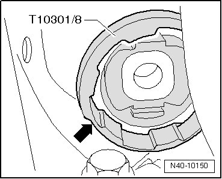
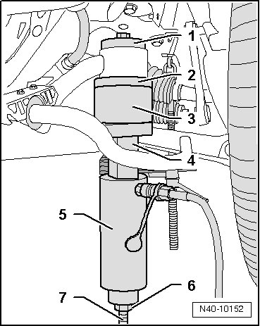
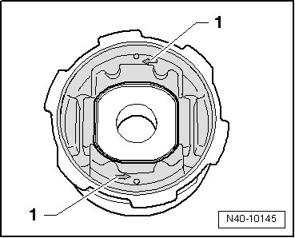
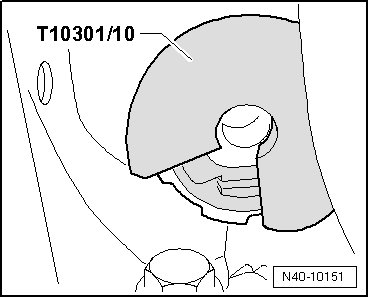
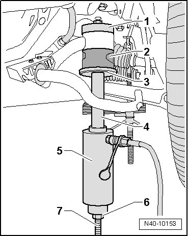

Subframe Bonded Rubber Bushing, Front
Subframe Bonded Rubber Bushing, Front
Removing
- Attach supporting ring (T10301/8) so that narrow side - arrow - faces subframe.

Supporting ring (T10301/8) must be able to be attached easily and must not be tilted.
- Install tools as shown in the illustration.

1. Press piece (T10301/5)
2. Support ring (T10301/8)
3. Tube (T10301/3)
4. Spacer (T10301/9)
5. Hydraulic press (VAS 6178) with pressure head (T10205/13)
6. Nut (T10301/2)
7. Spindle (T10301/1)
- Press out bonded rubber bushing.
CAUTION!
Secure hydraulic cylinder (VAS 6178) while pressing out.
Installation position
One of the arrows - 1 - must point in direction of travel

Installing
- Attach thrust piece (T10301/10) with open side to subframe.

CAUTION!
When pressing in bonded rubber bushing, make sure that thrust piece (T10301/10) is in correct position to prevent subframe from damage.
- Install tools as shown in the illustration.

1. Press piece (T10301/7)
2. Bonded rubber bushing
3. Thrust pad (T10301/10)
4. Spacer (T10301/11)
5. Hydraulic press (VAS 6178) with pressure head (T10205/13)
6. Nut (T10301/2)
7. Spindle (T10301/1)
- Press in bonded rubber bushing until shoulder lies gap free at subframe sleeve.
- Mount subframe to body. Refer to --> [ Mount subframe on body and remove (second mechanic required). ] Subframe Servicing.